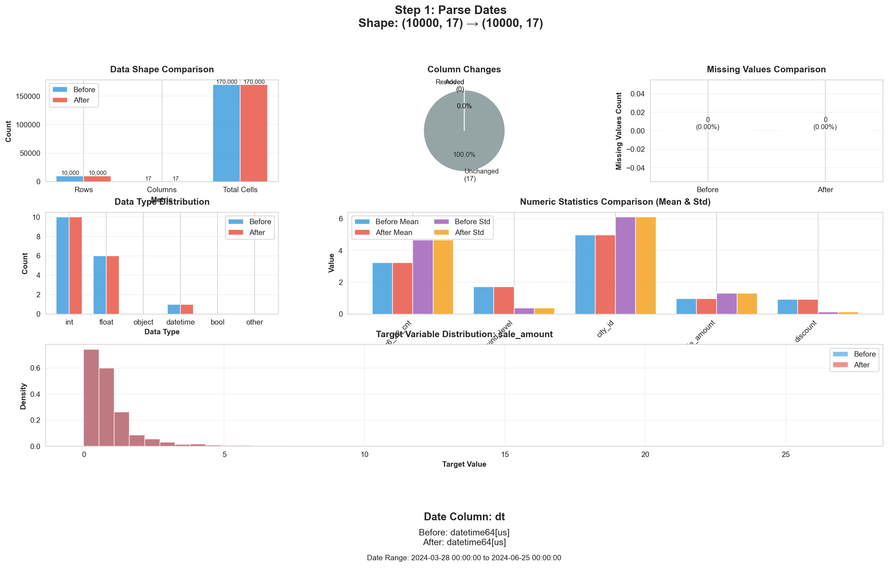
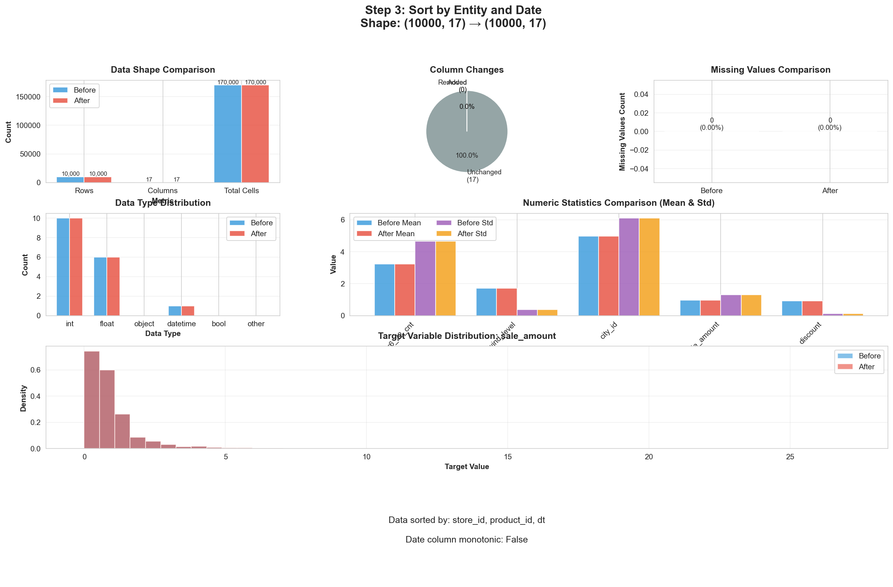
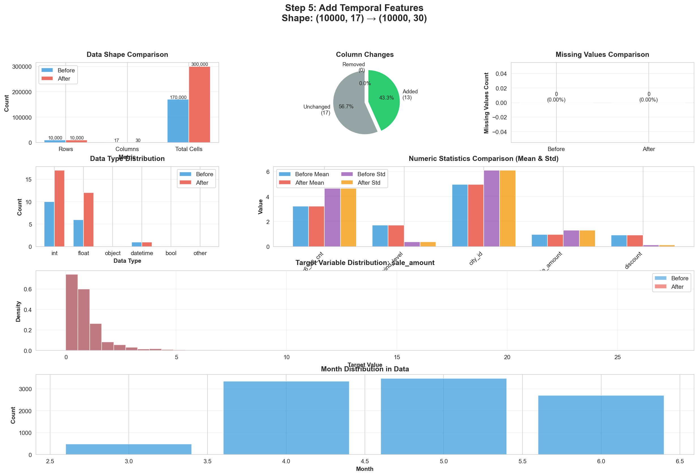
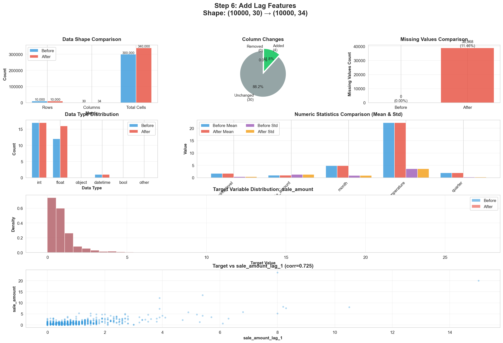
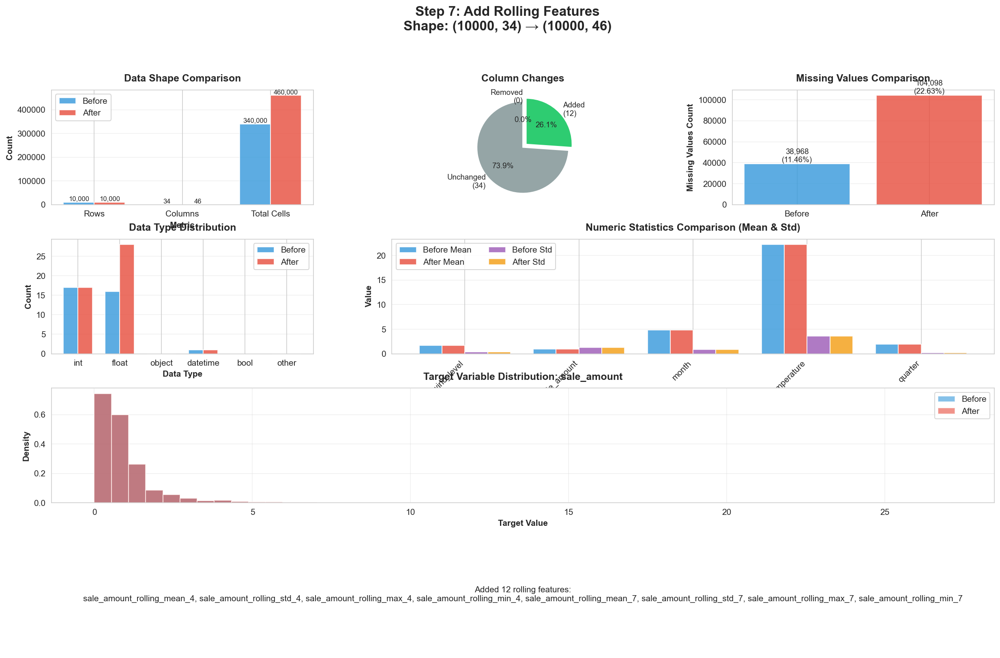
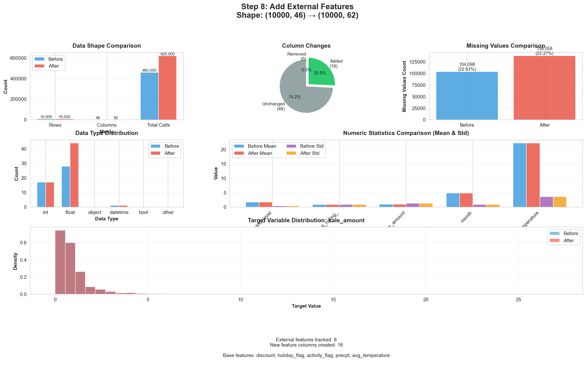
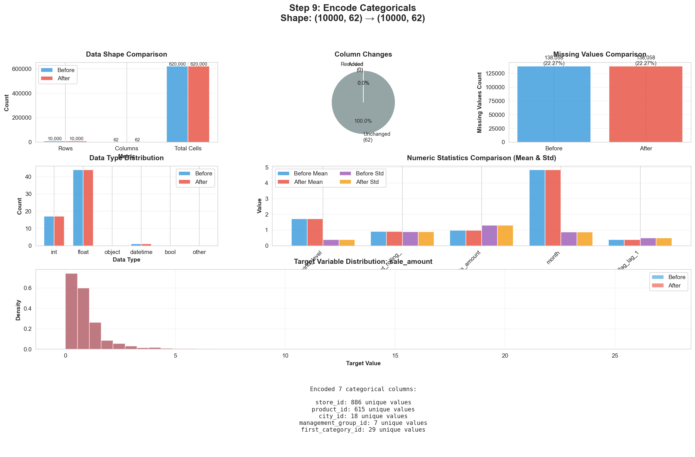
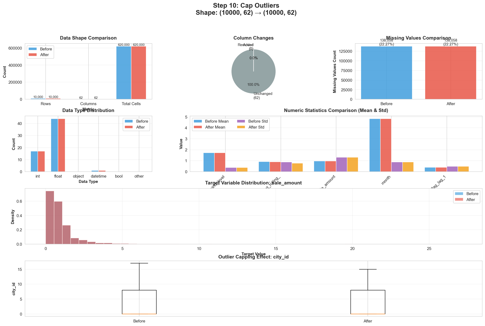
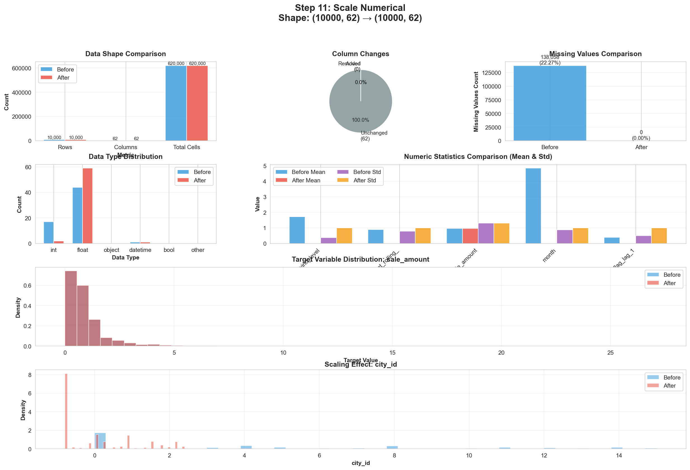

Pipeline Overview
11
Preprocessing Steps
17→62
Features (Columns)
+45
Engineered Features
0%
Data Leakage
✅ Key Achievements
- No Data Leakage: All fit operations use training data only
- Rich Feature Set: From 17 raw features to 62 engineered features
- Temporal Integrity: Lag/rolling features use past values only
- Production Ready: Scalable and reproducible pipeline
Complete Summary Visualization

Data Transformation Summary
| Step | Name | Shape | Columns Added | Purpose |
|---|---|---|---|---|
| 1 | Parse Dates | (10000, 17) → (10000, 17) | 0 | Enable temporal operations |
| 2 | Select Columns | (10000, 17) → (10000, 17) | 0 | Focus on relevant features |
| 3 | Sort Data | (10000, 17) → (10000, 17) | 0 | Chronological ordering |
| 4 | Impute Missing | (10000, 17) → (10000, 17) | 0 | Handle missing values |
| 5 | Temporal Features | (10000, 17) → (10000, 30) | +13 | Extract time patterns |
| 6 | Lag Features | (10000, 30) → (10000, 34) | +4 | Autoregressive patterns |
| 7 | Rolling Features | (10000, 34) → (10000, 46) | +12 | Smooth trends |
| 8 | External Features | (10000, 46) → (10000, 62) | +16 | External covariates |
| 9 | Encode Categoricals | (10000, 62) → (10000, 62) | 0 | Convert to numeric |
| 10 | Cap Outliers | (10000, 62) → (10000, 62) | 0 | Handle extremes |
| 11 | Scale Numerical | (10000, 62) → (10000, 62) | 0 | Standardize scales |
1
Parse Dates
Converts date column from string format to datetime64 objects, enabling temporal operations and proper date handling.
Columns Added
0
Leakage Risk
None
Data Preparation
No Leakage
Why Important: Datetime objects enable date arithmetic, extraction of temporal features, and proper sorting. String dates would fail in temporal operations.

2
Select Columns
Filters dataset to keep only relevant columns, removing sequence data and unnecessary features for tabular forecasting.
Columns Added
0
Leakage Risk
None
Data Preparation
No Leakage
Why Important: Reduces memory usage and computational cost by removing columns like hourly sequences that aren't suitable for tabular models.
3
Sort by Entity and Date
Sorts data by entity identifiers (store_id, product_id) and date in chronological order, essential for correct lag/rolling calculations.
Columns Added
0
Leakage Risk
None
Data Preparation
Critical for Temporal Features
No Leakage
⚠️ Critical Step: Without proper sorting, lag features would use random past values instead of chronological ones, breaking temporal logic and introducing errors.

4
Impute Missing Values
Fills missing values using statistics computed from training data only. Uses median for numeric features and mode for categorical features.
Columns Added
0
Leakage Risk
Prevented
Fit on Train Only
Leakage Prevented
🔒 Leakage Prevention: Imputation values (median/mode) are computed from training data only, then applied to both train and validation. This prevents validation statistics from influencing the model.

5
Add Temporal Features
Extracts time-based features from the date column: year, month, week, day of week, quarter, and cyclical encodings (sin/cos).
Columns Added
+13
Leakage Risk
None
Feature Engineering
No Leakage
year
month
week
quarter
day_of_week
month_sin/cos
week_sin/cos
+ more
Why Important: Captures seasonality (monthly/quarterly patterns), weekly cycles, and long-term trends. Sin/cos encodings handle cyclical nature of time (Dec→Jan transition).

6
Add Lag Features
Creates features from past values of the target variable. Uses lags of 1, 2, 4, and 7 days to capture recent trends and weekly patterns.
Columns Added
+4
Leakage Risk
None
Feature Engineering
Past Values Only
sale_amount_lag_1 (yesterday)
sale_amount_lag_2 (2 days ago)
sale_amount_lag_4 (4 days ago)
sale_amount_lag_7 (last week)
✅ Autoregressive Pattern: Past sales are often the strongest predictor of future sales. Lag features capture this temporal dependency while ensuring only past data is used (via .shift()).

7
Add Rolling Features
Computes rolling window statistics (mean, std, min, max) over past 4, 7, and 14 days to capture smoothed trends and volatility.
Columns Added
+12
Leakage Risk
None
Feature Engineering
Past Values Only
Rolling Statistics:
- Mean: Average trend over window
- Std: Volatility/stability measure
- Min/Max: Recent extremes

8
Add External Features
Incorporates external covariates (weather, promotions, holidays, stock) and creates lagged versions to capture delayed effects.
Columns Added
+16
Leakage Risk
None
Feature Engineering
Past Values Only
External Features:
- Promotions: discount, holiday_flag, activity_flag
- Weather: temperature, humidity, wind, precipitation
- Stock: stock_hour6_22_cnt

9
Encode Categoricals
Converts categorical variables (store_id, product_id, category_ids) to numeric codes using label encoding fit on training data.
Columns Added
0
Leakage Risk
Prevented
Fit on Train Only
Leakage Prevented
🔒 Leakage Prevention: Encoding mappings (e.g., Store_A→0, Store_B→1) are learned from training data only. Unknown categories in validation get mapped to -1.

10
Cap Outliers
Winsorizes extreme values by capping at 1st and 99th percentiles computed from training data, reducing impact of outliers.
Columns Added
0
Leakage Risk
Prevented
Fit on Train Only
Leakage Prevented
Why Winsorize: Instead of removing outliers (losing data), we cap extreme values to train percentiles. This preserves all rows while reducing outlier impact on model training.

11
Scale Numerical
Standardizes numerical features to mean=0 and std=1 using training data statistics, ensuring all features have equal scale.
Columns Added
0
Leakage Risk
Prevented
Fit on Train Only
Leakage Prevented
Why Scale: Features on different scales (sales: 0-500, temperature: -10 to 40) can dominate models unfairly. Standardization (z-score) puts all features on equal footing, improving convergence and interpretability.
